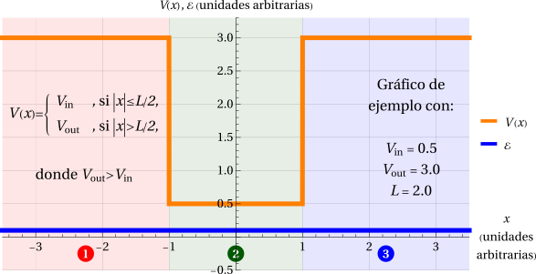

Caso (c): \(\mathcal{E}\lt V_\text{in}\)
En el caso (c) la energía de la partícula es menor que el mínimo del potencial.

Aquí la energía queda por debajo del fondo del pozo (y, por lo tanto, también por debajo de \(V_\text{out}\)). Ocurrirá que
Como \(V_\text{out}>V_\text{in}>\mathcal{E}\), ambos \(\gamma\) son positivos y \(\gamma_\text{out}>\gamma_\text{in}>0\). Es decir, ya no habrá comportamiento oscilatorio en ninguna región: las tres tendrán comportamiento exponencial real.
\[ \begin{array}{rcrcl} \psi_1 & = & A_1e^{-\gamma_\text{out}x} & + & B_1e^{\gamma_\text{out}x}, \\ \psi_2 & = & A_2e^{-\gamma_\text{in}x} & + & B_2e^{\gamma_\text{in}x}, \\ \psi_3 & = & A_3e^{-\gamma_\text{out}x} & + & B_3e^{\gamma_\text{out}x}. \end{array} \]Igual que en el caso (b), hay exponenciales que divergen en los extremos:
- En la Región 1, \(e^{-\gamma_\text{out}x}\) diverge cuando \(x\to-\infty\).
- En la Región 3, \(e^{+\gamma_\text{out}x}\) diverge cuando \(x\to+\infty\).
La Región 2 es acotada, de modo que ahí ninguna exponencial diverge y conservamos ambas. Imponiendo de antemano que \(A_1=B_3=0\):
\[ \begin{array}{rcrcl} \psi_1 & = & B_1e^{\gamma_\text{out}x} & & , \\ \psi_2 & = & A_2e^{-\gamma_\text{in}x} & + & B_2e^{\gamma_\text{in}x}, \\ \psi_3 & = & A_3e^{-\gamma_\text{out}x} & & . \end{array} \]Este potencial es una función par, así que, como vimos en la teoría general, podemos separar las soluciones en pares e impares. En la Región 2, las exponenciales reales se combinan en funciones hiperbólicas: \(\cosh(\gamma_\text{in}x)\) es par y \(\sinh(\gamma_\text{in}x)\) es impar. Reabsorbiendo las constantes,
Sistemas de ecuaciones y condiciones sobre la energía
Por la simetría de paridad, las condiciones de continuidad en \(x=-L/2\) son equivalentes a las de \(x=+L/2\). Basta con imponer estas últimas, que en cada rama dan dos ecuaciones y dos incógnitas:
Matricialmente, \(\mathbf{M}_s\cdot\vec{v}_s=\vec{0}\), con \(\vec{v}_s=(\mathcal{A}_s,\mathcal{B}_s)^T\) y
\[ \mathbf{M}_\text{par}=\begin{pmatrix} e^{\frac{L\gamma_\text{out}}{2}}\cosh\left(\frac{L\gamma_\text{in}}{2}\right) & -1 \\ \gamma_\text{in}\,e^{\frac{L\gamma_\text{out}}{2}}\sinh\left(\frac{L\gamma_\text{in}}{2}\right) & \gamma_\text{out} \end{pmatrix} \quad\text{y}\quad \mathbf{M}_\text{impar}=\begin{pmatrix} e^{\frac{L\gamma_\text{out}}{2}}\sinh\left(\frac{L\gamma_\text{in}}{2}\right) & -1 \\ \gamma_\text{in}\,e^{\frac{L\gamma_\text{out}}{2}}\cosh\left(\frac{L\gamma_\text{in}}{2}\right) & \gamma_\text{out} \end{pmatrix}. \]Como ya vimos, para evadir la solución trivial \(\vec{v}_s=\vec{0}\) se necesita que \(\det(\mathbf{M}_s)=0\). Calculando los determinantes,
\[ \begin{aligned} \det(\mathbf{M}_\text{par}) &= e^{\frac{L\gamma_\text{out}}{2}}\left[\gamma_\text{out}\cosh\left(\frac{L\gamma_\text{in}}{2}\right)+\gamma_\text{in}\sinh\left(\frac{L\gamma_\text{in}}{2}\right)\right], \\ \det(\mathbf{M}_\text{impar}) &= e^{\frac{L\gamma_\text{out}}{2}}\left[\gamma_\text{out}\sinh\left(\frac{L\gamma_\text{in}}{2}\right)+\gamma_\text{in}\cosh\left(\frac{L\gamma_\text{in}}{2}\right)\right]. \end{aligned} \]Aquí \(\gamma_\text{in}>0\), \(\gamma_\text{out}>0\) y \(L>0\), de modo que \(\cosh\left(\frac{L\gamma_\text{in}}{2}\right)>0\) y \(\sinh\left(\frac{L\gamma_\text{in}}{2}\right)>0\). Todos los términos de ambos determinantes son positivos y, por lo tanto,
Es decir, nunca se cumple \(\det(\mathbf{M}_s)=0\). Entonces \(\vec{v}_s=\vec{0}\) es la única solución, en ambas ramas: la función de onda sería nula. Concluimos que no existen estados con energía \(\mathcal{E}\lt V_\text{in}\).
Interpretación
- Este resultado concuerda con un argumento general: para cualquier estado, \(\langle \widehat{\mathbf{H}}\rangle=\langle \widehat{\mathbf{T}}\rangle + \langle \widehat{\mathbf{V}}\rangle\), con \(\langle \widehat{\mathbf{T}}\rangle\ge0\) y \(V(x)\ge V_\text{in}\). Entonces \(\langle \widehat{\mathbf{H}}\rangle>V_\text{in}\), y ningún eigenvalor de la energía puede estar por debajo del mínimo del potencial.
- Caso límite \(\mathcal{E}=V_\text{in}\): se tiene \(\gamma_\text{in}=0\), de modo que en la Región 2 la solución es una constante (par) o una recta que pasa por el origen (impar). Al imponer la continuidad, cada rama conduce de nuevo solo a \(\vec{v}_s=\vec{0}\). Es por ello que, en el caso (b), \(\eta=0\) queda excluido y se pedía \(n\ge1\).